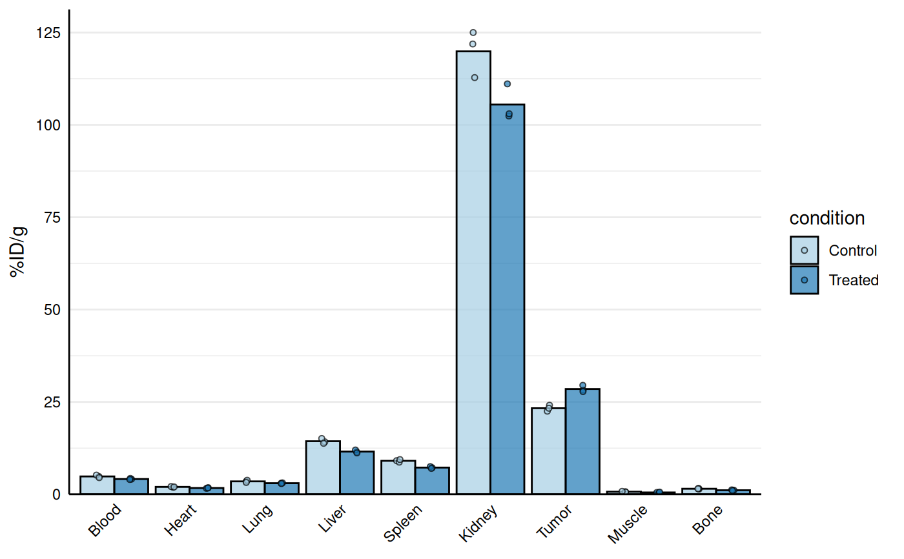
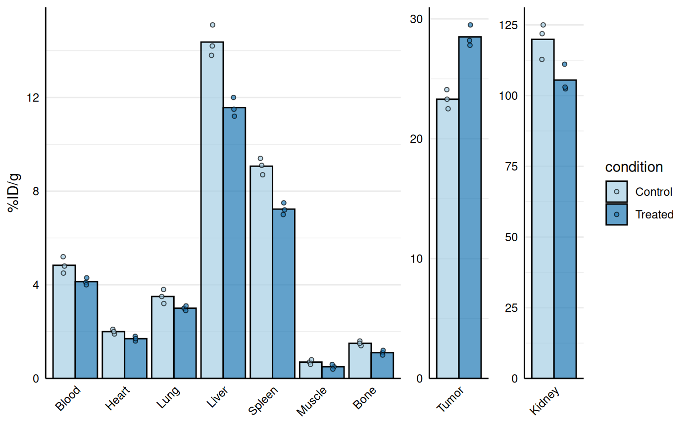
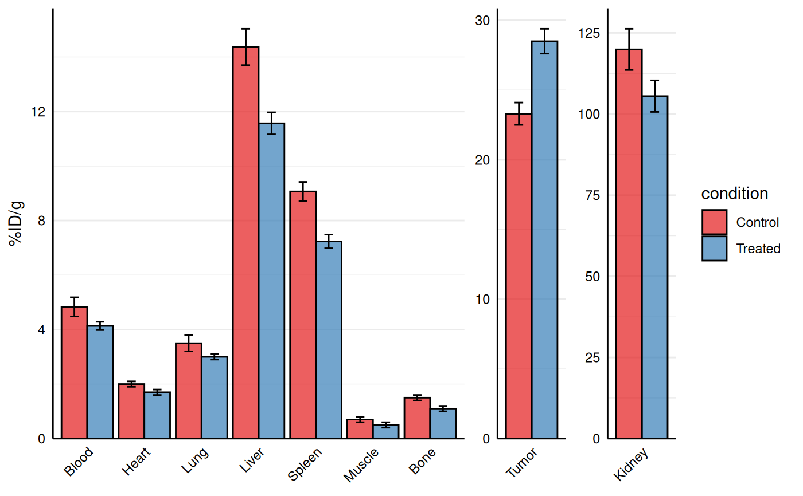

Creates a barplot visualization of biodistribution data (e.g., %ID/g across organs) with optional separation of specific organs onto free y-scales to prevent squishing of lower values. Points are overlaid on bars and all facets are displayed in a single row.
The function accepts:
Long data:
valueis the name of the numeric column containing the measurements (original behaviour).Wide data:
valueis a regular expression pattern that matches the measurement columns (e.g."_val$"forBlood_val,Liver_val, etc.). In this case, the data are internally converted to long format, creating a column named byidfor organ/tissue and a column named byvaluefor the measurements.
Usage
gg_biodist(
data,
id = "id",
value = "value",
y_label = value,
group = NULL,
separate = NULL,
fill_colors = NULL,
bar_alpha = 0.7,
point_size = 1.5,
stat_summary = "mean",
error_bars = FALSE,
quiet = FALSE
)Arguments
- data
A data frame containing biodistribution measurements.
- id
Character string specifying the column name in
datathat contains organ/tissue identifiers (in long format) or the name that will be used for the organ/tissue column created from wide data. Default is "id".- value
Character string specifying either: (1) the column name in
datathat contains the measurement values (long data), or (2) a regular expression pattern that identifies the measurement columns (wide data, e.g.,"_val$"to matchBlood_val,Liver_val, etc.). Default is "value".- y_label
Character string specifying the label to use for the y-axis. Default is the same as
value.- group
Character string specifying the column name in
datathat defines groups (e.g., treated vs control). Default is NULL (no grouping). When provided, bars and points are dodged and colored by group.- separate
Character vector of organ/tissue names (matching values in the
idcolumn) to display on separate y-axis scales. This prevents high-uptake organs from compressing visualization of lower-uptake organs. Default is NULL (no separation).- fill_colors
Character vector of colors used to fill bars and points. If
groupis NULL, the first color is used (default"#92b9de"iffill_colorsis NULL). Ifgroupis provided, one color per group level is used (in the order of factor levels). Iffill_colorsis NULL in the grouped case, a default brewer palette ("Paired") is used.- bar_alpha
Numeric value (0-1) specifying transparency of bars. Default is 0.7.
- point_size
Numeric value specifying size of points. Default is 1.5. If set to 0, points are not drawn.
- stat_summary
Character string specifying summary statistic for bars. One of
"mean"or"median". Default is"mean". Points show individual values.- error_bars
Logical indicating whether to add error bars (mean ± SD). Default is FALSE.
- quiet
Logical indicating whether to suppress messages during data processing (e.g., when coercing non-numeric columns to numeric). Default is FALSE.
Value
A ggplot2 object showing the biodistribution as barplot with points. The plot displays:
Bars representing summary statistics (mean or median) for each organ
Individual data points overlaid on bars
Optional grouping with dodged bars and colored by group
Optional separation of high-uptake organs onto independent y-scales
Optional error bars showing standard deviation
Details
The function automatically handles both long and wide format data:
Long format: Each row represents one measurement with columns for organ ID and value
Wide format: Each row represents one sample/replicate with separate columns for each organ (detected via regex pattern)
When separate is specified, high-uptake organs are displayed in
separate facets with independent y-axis scales, preventing compression of
lower values in the main plot.
Examples
bio_data <- data.frame(
id = paste0("sample_", 1:6),
condition = rep(c("Control", "Treated"), each = 3),
replicate = rep(1:3, times = 2),
Blood_val = c(4.8, 5.2, 4.5, 4.1, 4.3, 4.0),
Heart_val = c(1.9, 2.1, 2.0, 1.6, 1.8, 1.7),
Lung_val = c(3.5, 3.8, 3.2, 3.0, 3.1, 2.9),
Liver_val = c(14.2, 15.1, 13.8, 11.5, 12.0, 11.2),
Spleen_val = c(9.1, 8.7, 9.4, 7.2, 7.5, 7.0),
Kidney_val = c(125.0, 112.8, 121.9, 111.1, 102.4, 103.0),
Tumor_val = c(22.5, 24.1, 23.3, 28.2, 29.5, 27.8),
Muscle_val = c(0.7, 0.6, 0.8, 0.5, 0.4, 0.6),
Bone_val = c(1.4, 1.6, 1.5, 1.1, 1.2, 1.0)
)
# Base biodist plot
gg_biodist(bio_data, id = "organ",
value = "_val", group = "condition",
point_size = 1.25,
y_label = "%ID/g")

# Separate high uptake organs on separate axis
gg_biodist(bio_data, id = "organ",
value = "_val", group = "condition",
point_size = 1.25,
y_label = "%ID/g",
separate = c("Tumor", "Kidney"))

# Customization
gg_biodist(bio_data, id = "organ",
value = "_val", group = "condition",
point_size = 0, error_bars = TRUE,
fill_colors = c("#e41a1c", "#377eb8"),
y_label = "%ID/g",
separate = c("Tumor", "Kidney"))
